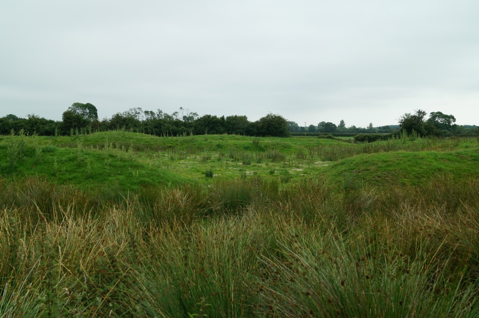
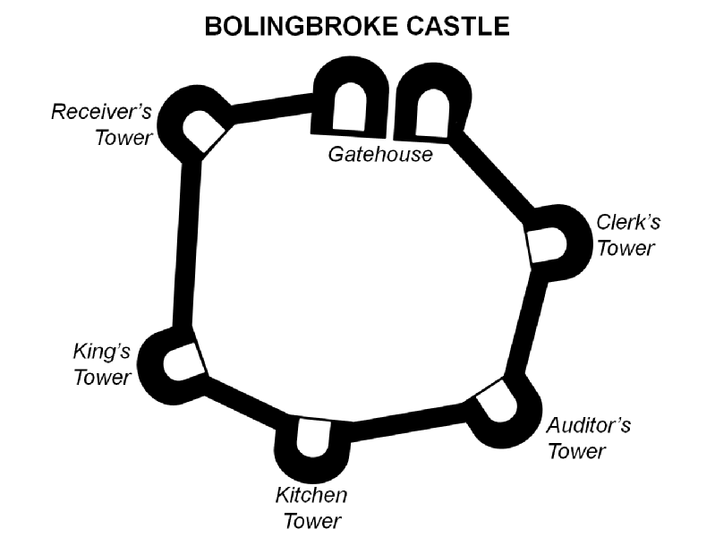
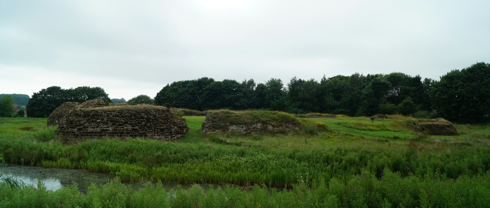
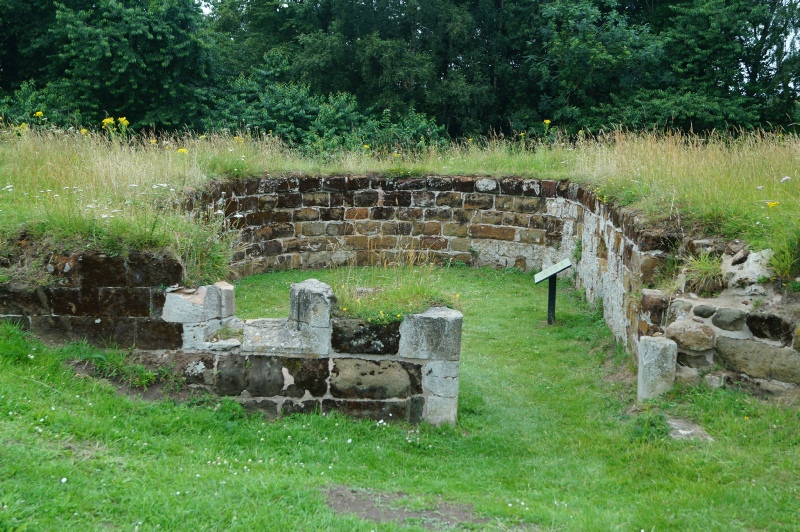
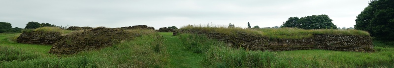
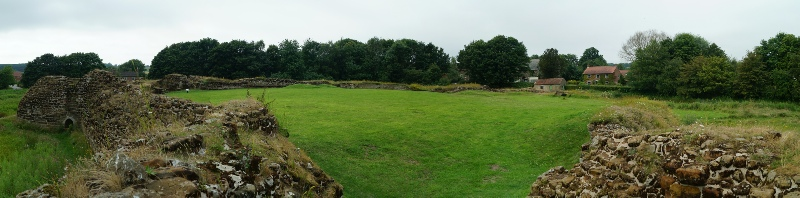
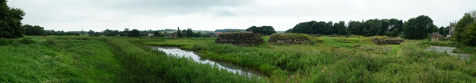

BOLINGBROKE CASTLE, PE23 4HH
GETTING THERE
Postcode: PE23 4HH
Lat/Long: 53.165177N 0.016964E
Notes: Castle is located in the small village of Old Bolingbroke with the entrance to the site being on Moat Lane. No dedicated car parking but a small layby allows just enough space for a small car.
WHAT IS THERE TO SEE?
The remains of an enclosure castle. The foundations enable the original configuration of the fortification to be appreciated but the structures themselves have all been demolished. An earthwork, of unknown date or purpose, can be viewed just to the south of the castle.
VISIT OFFICIAL SITE (Opens in new window)
Owned by English Heritage .
ADDITIONAL NOTES
1. Bolingbroke is derived from a Saxon name meaning 'the brook by the home of Bulla's people'.
1. Ranulf de Blondeville, Earl of Lincoln (and Chester) also constructed Beeston and Chartley Castles.
2. In the fifteenth and sixteenth centuries, Bolingbroke Castle was the centre of administration for the Duchy of Lancaster. Auditor's Tower and Receiver's Tower betray their function.
Rectangular Earthwork . A significant earthwork just to the south of the castle is a mystery with its function hotly disputed. Claims ranging from a seventeenth century fort through to an eighteenth century fish pond have been mooted. If the former this is certainly consist with actions taken at other medieval sites hastily re-fortified during the Civil War - Donnington Castle for example. Unlike Donnington however the earthwork would not provide a 360 degree artillery defence for the castle suggesting it might be one of a pair or something else entirely.
An impressive five towered enclosure castle, Bolingbroke Castle was the birthplace of the future Henry IV. Although in a poor state of repair by the seventeenth century it was garrisoned by Royalist forces during the Civil War and withstood a one month siege before surrendering.
HISTORY OF BOLINGBROKE CASTLE
It seems probable that a fortified Saxon Burh existed at Bolingbroke whilst the earthworks overlooking the village are believed to be those of an eleventh century Norman motte-and-bailey. However the first known fortification is the medieval castle the remains of which are seen today. This was built between 1220-30 by Ranulf de Blondeville, Earl of Chester and Lincoln. It was an enclosure castle; the defensive parameter was a curtain wall supported by five towers but there was no central Keep.
In 1359 the castle passed through marriage to John of Gaunt, Duke of Lancaster. His son was born at the castle in 1367 and accordingly took the name of Henry Bolingbroke. Henry however had a stormy relationship with Richard II and was exiled by him in 1397. When John of Gaunt died in 1399, King Richard attempted to seize his vast estates prompting Henry to illegally return from exile. Finding support for Richard at a low, he mounted a successful coup and took the throne as Henry IV. Richard was imprisoned at Pontefract Castle was he was murdered probably by starvation.
Once Henry became King, Bolingbroke became a Royal castle and its main function was to administer the extensive estates of the Duchy of Lancaster. The castle's defences were neglected with only one major modification - a rebuilding of the King's Tower between 1444 and 1456 - conducted during this time.
By the seventeenth century the castle's defences were in a poor condition but this didn't stop the site being occupied and re-fortified by Royalist forces in 1643. During this time the Royalist commander William Cavendish, Marquis of Newcastle was besieging Hull but led the greater part of force into Lincolnshire to wrestle control of the country from Parliament. Lincoln and Gainsborugh, only recently secured by Parliament following the Battle of Gainsborough, were both taken and he pressed onto Bolton . However the blockading force he had left at Hull was struggling to contain the town - a significant Parliamentary cavalry force under Sir Thomas Fairfax had escaped and was now a threat to his rear. The Marquis opted not to take Bolton and returned to Hull but left garrisons throughout Lincolnshire with a well provisioned 200 strong force at Bolingbroke Castle. A significant Royalist force was at Newark in support.
The Royalists seemingly dug earthworks to augment the outdated defences of the medieval castle and this proved timely because as the Marquis of Newcastle withdrew, Parliament advanced. A force under Edward Montagu, Earl of Manchester besieged the castle in 1643 hoping to draw the Royalist garrison out of Newark and into an open battle. William Widdrington, Lieutenant General of Lincolnshire and Sir John Henderson, Newark governor took the bait and headed a Royalist force to relieve Bolingbroke. Manchester's force, augmented by cavalry forces under Sir Thomas Fairfax and Oliver Cromwell, intercepted the Royalists and routed them at the Battle of Winceby fought on 11 October 1643. The siege remained in force on Bolingbroke Castle and, with no further hope of relief, the garrison surrendered on 14 November 1643.
After the war the damaged castle was not repaired and to prevent further military use Parliament ordered it to be slighted. Accordingly in 1652 a portion of the curtain wall was demolished and thrown into the moat. Local residents also took the opportunity to source building materials from the castle which quickly descended into ruin.
© Copyright 2016 | Terms and Conditions (inc Cookie Policy) | Contact Us
Recovered original photographs, plans and images






